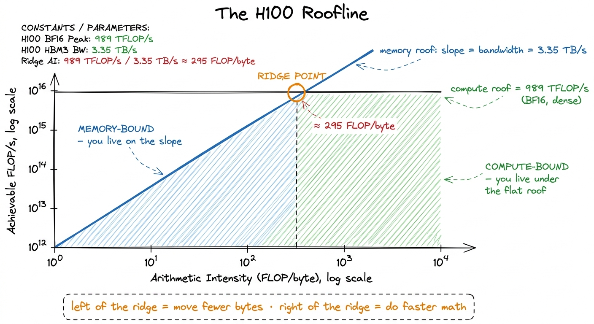
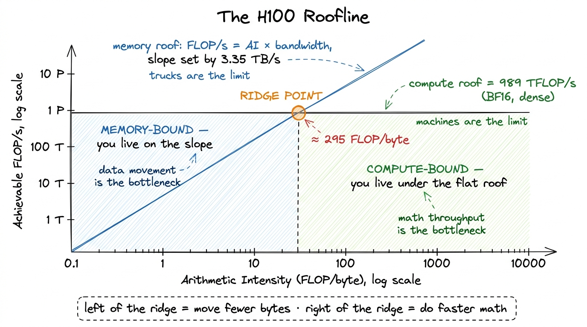
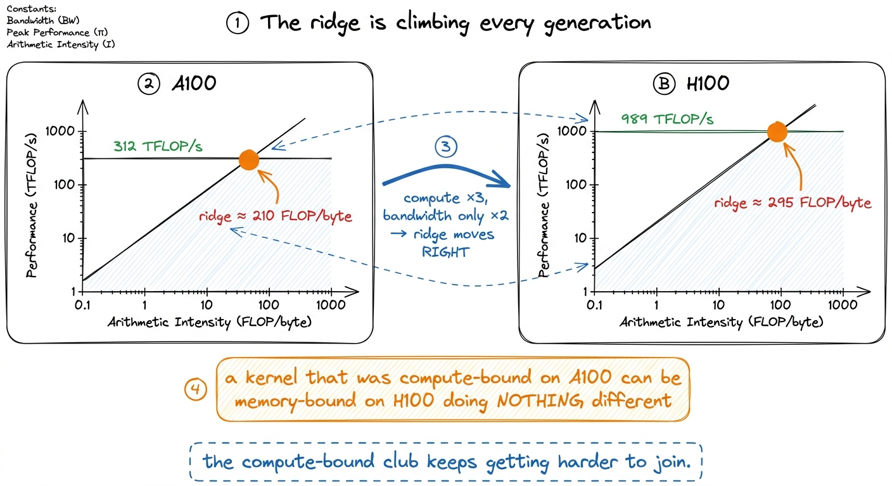

The roofline model in practice ROOFLINE
In the three regimes I claimed you can usually tell what a kernel is waiting on in under a minute. This article is the picture behind that claim. The roofline model takes the two hardware numbers I keep quoting — peak compute and peak bandwidth — and turns them into a single chart you can drop any kernel onto and read its fate off the axes. It answers three questions at once: what is the ceiling for this kernel, am I close to it, and if not, which wall am I hitting. It also answers a fourth question that engineers forget to ask: when do I stop?
I want to build it from the ground up, plot a real GEMM on it at several sizes, and — this is the part most tutorials skip — show it being wrong, because the honest roofline is more useful than the pretty one.
Two numbers, one chart
Start with the machine, not the kernel. An H100 SXM5 gives you two hard ceilings. The first is peak compute: about 989 TFLOP/s of BF16 through the tensor cores, in the realistic sparsity-free regime.1 The marketing slide says ~1979 TFLOP/s. That number assumes 2:4 structured sparsity, which you almost never have in a dense GEMM. Roofline with the sparse peak will lie to you about your headroom, so I always use the dense number. The second is peak memory bandwidth: about 3.35 TB/s from HBM3. Every kernel on this chip lives underneath both.
The roofline plots achievable throughput (FLOP/s, y-axis) against arithmetic intensity (AI) — FLOPs performed per byte moved to and from HBM, on the x-axis. Both axes are log scale, and that log-log framing is what makes the model click. The compute ceiling is a flat horizontal line at 989 TFLOP/s: no matter how much data you reuse, the tensor cores cannot go faster than that. The bandwidth ceiling is a sloped line through the origin, because if you are limited by moving bytes, the FLOP/s you can sustain is exactly AI × bandwidth — feed the chip more FLOPs per byte and it delivers proportionally more FLOP/s, until it hits the flat compute roof and can climb no further.

figure rendering · The roofline is two ceilings: a sloped bandwidth roof and a flat compuThe ridge point is the whole model
The two roofs cross at one spot, and that spot is the only number you need to memorize. Divide peak compute by peak bandwidth:
ridge = 989e12 FLOP/s / 3.35e12 byte/s ≈ 295 FLOP/byteThat ridge point — roughly 295 FLOPs per byte — is the arithmetic intensity at which the memory roof finally reaches the compute roof. It partitions every possible kernel into two worlds. If your kernel's AI is below 295, you hit the sloped roof first: you are memory-bound, and your absolute ceiling is AI × 3.35 TB/s, well short of the tensor cores' peak. If your AI is above 295, you hit the flat roof first: you are compute-bound, and 989 TFLOP/s is the wall.2 Two subtleties. First, the "bytes" in AI are bytes moved to and from HBM, not bytes touched — data served from L2 or shared memory doesn't count, which is exactly why caching raises your effective AI. Second, the effective ridge shifts if your math isn't on the tensor cores: for FP32 CUDA-core GEMM the compute roof is far lower, so the ridge sits at a much smaller AI.
Notice how brutal the H100's ridge is — and to see it honestly you have to compare like with like. Stay on the tensor cores for both chips: an A100 pairs ~312 TFLOP/s of dense BF16 with ~1.5 TB/s of bandwidth, putting its ridge near 210 FLOP/byte; the H100 pairs ~989 TFLOP/s with ~3.35 TB/s, pushing the ridge to ~295. Compute roughly tripled while bandwidth roughly doubled, so the ridge climbed by something like a third in a single generation.3 Watch the precision domain when you quote ridge points — it is the easiest way to fool yourself. The A100's FP32 CUDA-core ridge is only ~13 FLOP/byte (19.5 TFLOP/s / 1.5 TB/s), an order of magnitude below its tensor-core ridge. Comparing one chip's CUDA-core ridge against another's tensor-core ridge is apples-to-oranges and will wildly overstate the shift. That is the roofline making concrete the trend I keep harping on: the compute-bound club keeps getting harder to join. A kernel that was comfortably compute-bound on an A100 can be memory-bound on an H100 doing nothing different.
Plotting a real kernel: GEMM at several sizes
Abstractions are cheap; let me put an actual matrix multiply on the chart. Take square C = A · B, all N × N. A GEMM does 2N³ FLOPs (a multiply and an add per inner-product term). The bytes it must move depend entirely on how much you reuse — and that is the entire story of the GEMM ladder.
The naive kernel reuses nothing. Every thread reads a full row of A and a full column of B straight from HBM, so the kernel streams on the order of N elements from global memory for each output, giving an arithmetic intensity of about 1 FLOP per element loaded — call it ~0.25 FLOP/byte in FP32. That is roughly 1200× below the H100 ridge. On the roofline it plots as a dot pinned to the far-left of the sloped roof, and its ceiling is 0.25 × 3.35 TB/s ≈ 0.8 TFLOP/s — a rounding error next to 989. This is why the naive kernel measures at a humiliating 1.3% of cuBLAS: the roofline predicted it before we ever ran ncu.
Now stage tiles of A and B in shared memory and reuse each loaded element across a whole block. Consider a 64 × 64 output tile: you load 2 × 64 × 64 input elements from HBM but perform 2 × 64³ FLOPs against them, so the AI scales with the tile edge. The napkin version: a BK-deep tile of edge BM = BN = 64 gives roughly AI ≈ BM/2 in elements, tens of FLOPs per byte — orders of magnitude better than naive, and the dot leaps rightward across the chart toward the ridge.4 This is why the ladder's biggest single jump is the shared-memory kernel: 8.5% → 12.8% of cuBLAS isn't from doing less math, it's from moving the dot right on the roofline by loading each byte once and reusing it 64 times. See shared memory.
The size sweep is where the roofline earns its keep, because AI depends on N:
N = 128. The whole problem is tiny. Even fully tiled, there isn't enough work to fill 132 SMs, and you spend your time on launch and tail effects. The kernel is overhead-bound — a regime the roofline doesn't even draw, because it lives below both roofs. Plotting it, the dot sits far under the slope, achieving a fraction of what its AI permits.N = 1024. Now there's real work. A well-tiled kernel has AI in the hundreds and lands near the ridge. This is the interesting, ambiguous zone: you are neither cleanly memory- nor compute-bound, and small changes to tile shape swing you across the ridge.N = 8192. The GEMM's AI is now in the thousands of FLOP/byte, far to the right of the ridge. The kernel is emphatically compute-bound; its dot sits pressed up against the flat 989 TFLOP/s roof. Every remaining percent of cuBLAS here comes from feeding the tensor cores better, not from touching memory.

figure rendering · The same GEMM plots in three different regimes depending only on N. OpReading the chart: which wall am I hitting
The diagnostic is embarrassingly simple once the dot is plotted. Draw your kernel's measured (AI, FLOP/s) dot and look at where it sits relative to the two roofs.
If the dot sits on the sloped roof, left of the ridge, you are memory-bound. Your ceiling is the slope, and the only way up is to move the dot right — raise AI by moving fewer bytes: fuse, cache in shared memory and registers, use lower precision, improve coalescing so every transaction is fully used. Reaching for faster math here does nothing; the tensor cores are already idle waiting on HBM.
If the dot sits under the flat roof, right of the ridge, you are compute-bound. Raising AI further is pointless — you're already past the corner. The only way up is vertical: get closer to 989 TFLOP/s by keeping the tensor cores fed. That means the wgmma async path, enough occupancy to hide latency, the right precision, and vectorized loads (float4) so instruction issue isn't the bottleneck.
And if the dot sits well below whichever roof is above it — not on the slope, not near the flat — you are neither. You are overhead-bound, or you have an occupancy cliff, a hidden copy, a bank conflict, a stall the roofline can't see. That gap between your dot and the roof above it is your remaining headroom, and it is the single most honest number in performance work.
The fastest way to compute the y-coordinate of your dot without a profiler: measure achieved FLOP/s and divide by peak. If you're at 80% of peak FLOP/s you are, by definition, at least 80% compute-bound, and the roofline is telling you to go home. If you're at 3%, the flat roof is irrelevant to you; you live on the slope.5 A practical trap: ncu's reported "compute throughput %" and "memory throughput %" are utilization of the busiest pipe, not your position on the roofline. A kernel can show 90% memory throughput while sitting far below the bandwidth roof because it's thrashing one L2 partition. Compute AI from actual bytes moved (dram__bytes.sum) and FLOPs from the algorithm — don't trust a single headline percentage.
When the roofline lies — and when to stop
Here is the part I promised. The roofline is a model, and models have a domain of validity. The naive version I drew assumes you can hit peak bandwidth and peak compute, and you usually can't. HBM3's 3.35 TB/s assumes perfect coalescing and both L2 partitions balanced across the crossbar; a strided or partition-camped kernel achieves a fraction of it, which means your effective memory roof is lower than the drawn one and your real ridge sits further left. Likewise the 989 TFLOP/s compute roof assumes the tensor cores never stall on operand delivery, which requires the whole shared-memory and register pipeline to keep up. The realistic chart has lowered roofs, and the honest engineer draws their achieved-bandwidth line and achieved-compute line as dashed ceilings underneath the theoretical ones.6 This is the "hierarchical roofline": one sloped roof per memory level — HBM, then L2 (~50 MiB), then shared memory (up to 228 KiB/SM at ~terabytes/s). A kernel bound by the HBM roof but well under the L2 roof is telling you to cache in L2; one bound by the L2 roof wants shared memory. Each level is a steeper slope and a nearer ceiling.

figure rendering · The hierarchical roofline: HBM, L2, and shared memory each get their oThis is what makes the roofline a stopping rule rather than a to-do list. The question is never "can this kernel be faster in the absolute" — it's "is there roof left above my dot?" When your dot is pressed against the achievable compute roof at a large N, you are done: cuBLAS itself is sitting on that same line, and the last few percent between you and it are engineering polish, not algorithmic wins. The warptile GEMM reaching 93.7% of cuBLAS is on the flat roof; the remaining 6.3% is not another regime to conquer, it's the asymptote. Knowing that saves you from the classic failure mode — grinding for weeks on the wall you already hit while the other wall, the one with headroom, goes untouched.
So the loop is always the same, and the roofline is the first step of it, not an afterthought. Before I write a kernel I compute its AI, find where it lands relative to the 295 ridge, and predict the regime. Then I measure, plot the real dot, and see how far below the roof it fell. When the prediction holds, I understand the kernel. When it doesn't, the gap is a lead. In the next articles we start climbing the GEMM ladder for real — and every rung is just this chart, with the dot one step higher and one step to the right.